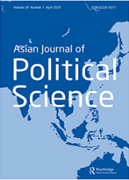

收录于合集

作品简介
【作者】 Andrew Stephen Campion是澳大利亚纽卡斯尔大学地理、政治和社会学研究院的客座研究员，博士，现为英国大西洋委员会(ACUK)资深研究员和执委会成员。他的研究兴趣是中国崛起及中国与西方国家的关系。
【编译】 蔡 宇（国政学人编译员）
【校对】 王馨翊
【审核】 李 源
【排版】 王国伟
【来源】 Campion, Andrew Stephen. “From Cnooc to Huawei: Securitization, the China Threat, and Critical Infrastructure.” Asian Journal of Political Science 28.1 (2020): 47-66.

期刊简介

Asian Journal of Political Science (AJPS)是由新加坡国立大学政治科学系资助的国际关系类学术期刊。该刊关注亚洲政治和治理，刊登政治科学，特别是比较政治、国际关系、政治学理论和公共管理方向的文献，特别关注亚洲区域和国家。
华为是如何被误解的？关键基础设施与安全化
From CNOOC to Huawei: securitization, the China threat, and critical infrastructure
内容提要
本文运用批评话语分析（Critical Discourse Analysis）讨论了中资基础设施项目如何被美国建构为“存在性威胁”，特别关注2005年美国对中海油事件的反应如何为十年后美国对华为公司的类似反应创造先例。上述案例表明安全威胁论话语以及核心基础设施的安全话语在美国政治话语中相互作用，最终成功将中国安全化的过程。该研究表明美国精英蓄意地并持续地将中国“安全化”的事实，并且揭示安全化理论中的批判路径，强调“安全化”与“去安全化”过程中的累积性和渐进性。通过对关键文本的话语分析，作者认为安全议题是被社会建构的。对中海油和华为议题的话语分析表明，国家安全的忧虑在美国政治话语中被反复使用，导致安全威胁成为美国观察者对中国的首要印象。
文章导读
基础设施的安全化话语是如何被操控(manipulate)的？对安全化理论的渐进路径(incremental approach)是解释美国和西方精英如何建构“他者”，以服务自身政策目标的有力工具。本文运用批评话语分析方法，解读美国政客和舆论受众如何将中资项目解读为安全威胁。文章认为中海油2005年并购加州优尼科(Unocal)失败，为美国通过华为将中国安全化提供了“话语背景”。文章首先阐述安全的话语本质，与美国对中国认知演变的历史；其次阐述关键基础设施安全和网络安全在当代西方政治话语中是如何被建构的；最后运用中海油和华为的案例进行解释。
01
安全化与互文性文本分析
回顾美国对安全议题的理解，琳娜· 汉森(Lene Hansen)认为安全化(securitization)议题产生于身份(identity)如何影响外交政策的主观认识(Hansen, 2006), 美国的外来威胁论并非客观实在的，而话语建构出来的。
批评话语分析是本文分析美国如何理解自身安全威胁的主要方法。当前美国三十年来的世界霸主地位正面临广泛挑战，其中中国崛起是美国政治家不安的源泉。作者认为，对中国崛起的忧虑通过话语建构，与能源与网络安全等关键基础设施的安全话语紧密联系起来。由于安全议程扩张到了非军事领域，所谓的中国“挑战者地位”才能被构建。
02
涉华安全威胁话语是什么？
詹姆斯·麦克格雷格(James McGregor)指出，中国崛起带来的安全威胁论一直缺乏定义，但在美国政治精英的话语中常常被提及。作者认为， 美国政治精英将中国塑造为一种好斗的、能干的、违背美国自身利益的“他者” 。在中国崛起论中，东方(the Orient)与西方(the West)作为两个相反的概念同样重要，因为“东方”作为“西方”的反面帮助建构了西方的形象、理念、人格和经历(Said, 1995)。
在历史上，西方对中国的印象在积极和消极两端不断摇摆。西方对中国的最初印象，来自于马可·波罗(Marco Polo)。直到17～18世纪西方启蒙运动为转折，西方对中国的观念逐渐由积极转向消极。西方的发展、工业化与科学进步与停滞的封建王朝形成鲜明反差。19世纪鸦片战争后，西方对清王朝的印象持续下行。清王朝统治者被美国人描述为贪腐、无礼与无能的，对美国不构成威胁。
然而在20世纪70年代中国改革开放后，西方对中国的看法突然开始转变。在1990年代，中国被描述为一种强大的、进攻性的力量，重新找到古代中华帝国的引力，并提供一种替代西方国际秩序的治理方式——朝贡体系(Breslin, 2011)。短短三十年内，西方不仅无法继续征服中国，还目睹中国从世界的“血汗工厂”一跃成为核心竞争者。这种突然性的转变触发了针对中国的安全忧虑。
西方涉华安全忧虑最早以军事和经济为基础，突出表现为“红色恐惧” (red menace)和“黄祸论”(yellow peril)。在意识形态方面，社会主义国家的身份使中国被美国政客“定位”(position)为对立面；在经济威胁方面，中国在20世纪90年代后稳步、高速的经济增长，使中国代替日本成为 “黄祸论”的攻击对象。中国被塑造为“以经济优势危害美国的权力和安全”的始作俑者。直至今日，安全化言论已经在美国成为塑造和传达对华舆论的主要手段，塑造了美国对华认知。
03
关于安全和关键基础设施的话语
在涉华安全忧虑话语中，西方对关键基础设施的理解起本质作用。 汉森指出后结构主义的方法能有限度地扩展安全研究的范围。而安全领域的扩大使学者可以探讨话语间关系，“关键系统面对灾难性切断的脆弱性”构成基础设施安全的主要话语(Collier & Lakoff, 2015)。莫迪夫和帕弗马克认为，关键基础设施对公共服务和私人企业都十分重要(Moteff & Parfomak, 2004)。尽管关键基础设施清单的认定往往不尽相同，例如美国2019年在《网络安全信息共享法案》(Cybersecurity Information Sharing Act)中列举16个行业，而澳大利亚在2018年只列举8个行业，但能源行业和网络/通信行业是任何国家的关键基础设施的核心。
对安全的理解往往间接影响一个国家对关键基础设施的态度。例如，安全作为较为主观的概念，在美国政策讨论中是如何被建构的？作者认为，美国往往从防止“不安全”的意义上定义安全问题(Gjorv, 2012)。 在关键基础设施上，“安全”是大型基础设施被突然切断后的复原能力(resilience) (Collier & Lakoff, 2015) 。能源安全是指能源供应的可持续性(Winzer, 2012) 。在通信与网络安全上，对“紧急情况和复原能力的焦虑”使得保护安全的信息流成为优先事项(Herrington & Aldrich, 2013)。
对复原能力的关注，使关键基础设施一直成为安全的首要关切。 由基础设施引发的涉华安全忧虑往往在话语中强调“消极安全”(negative security)。奥巴马在能源问题上强调：“对石油的依赖是美国未来面对的最严重威胁。” 奥巴马政府一方面将供应安全 、 油气稀缺同油气安全的考量联系以来，另一方面将油气列入安全的评估范围， 将“威胁”(threat)与“能源短缺”(energy)联系起来 。 无独有偶，特朗普曾在演讲中指出“网络威胁正在不断演变，它可能来自于各种复杂多样的对手。”特朗普政府不仅将“威胁”与“网络”等同看待，他更通过演讲渲染放大网络威胁的范围限度。这些言语- 行为(speech-act)自身不能将能源和网络议题安全化，但言语- 行为有助于建立更广泛的叙述，因此成为安全化解读过程中的重要步骤。特朗普称通讯技术与网络安全十分重要，因为“它是美国人民生活、美国经济和防务必须的一部分”。
美国对“消极安全”话语凸显了相对收益和竞争。 在能源领域，美国对消极安全(negative security)的强调凸显了石油非可再生能源供应的短期稀缺。美国对能源安全消极式的解读强调了能源稀缺和相对收益，主要考虑短期内不可再生能源(尤其是石油)的供应安全。由于中国的石油进口量逐年增长，中国被置于美国能源安全竞争者的地位。同样地， 相对收益和竞争强化了通信和网络安全概念 ，因为“网络安全意在保护自身资产和妥协保护竞争对手的资产”(Galinec, et al., 2017)。 下文中对中海油收购优尼科和华为事件两个案例的分析表明了两种不同的关键基础设施是如何以相似的方式被“误读”为安全化话语的。
04
安全化话语与中海油
2005年中海油出资185亿美元主动竞标并购具有资本和技术的优尼科公司，尽管竞标合同具有吸引力，但仍激起美方精英以美国国家安全为由的强烈抵制。中海油随后面临美国外国投资委员会(CFIUS)的审查，后者是一个防止外来投资侵害美国利益的匿名机构。中海油的并购被认为超出了经济利益，加上安全威胁的莫须有罪名(Lloyd- Smith, 2005)，最终迫使中海油撤标。
作者认为中海油事件反映出美国对华安全忧虑的话语已经深入美国话语的结构中，甚至凌驾于自由市场规则之上，使一个合法交易行为被迫取消。尽管中海油对此事进行了回应，但这一事件将成为未来中美关系发展的先例。
05
安全威胁话语和华为
当代4G技术由西方公司和东亚公司(LG，高通，摩托罗拉，诺基亚，索尼爱立信)所有(Ray, 2011)。在4G时代，潜在敏感数据在信息网络中的数据操作并未和5G一样产生相同的盲目恐慌情绪。
尽管华为和中兴等中国主要通信公司早已参与了4G网络，但中国5G科技的突飞猛进与中国的安全焦虑迅速合流，将5G技术推上风口浪尖。作者认为5G安全化的核心话语在于美国精英阶层将“中国的意识形态身份定位为美国利益的对立面”。《中国技术转移限制法案》等一系列新法案将中国确立为美国的首要威胁。 值得注意的是，中国并没有因为任何确凿的网络攻击或相关事件被安全化，华为事件则是中国的安全化话语不断累积发酵，最终爆发的结果。 这并不是一个从常规政治到例外手段的突然转折，美国是在常规政治范围内，以例外方式(exceptional ways)将中资企业安全化并推行自己的利益。
自1994年至2014年，华为一步步将自身打造成为全球最大的通信设备制造商。作者认为，美国对中兴公司的指控和调查是华为被安全化的开端。2012年美国联邦调查局称中兴违反了美国对伊朗电子计算机设备的出口禁令。挥之不去的安全话语加强了受众的怀疑论倾向，而中国与伊朗关系的言论加剧这种担忧。同年10月，美国众议院情报委员会指控华为伙同中兴“偷窃”“可能用于从事间谍活动”的美国知识产权。“对华恐惧症”(Sinophobia)使华为与“网络战”联系起来(Magee, 2019)。 作者认为，对关键基础设施的安全化和对中国的安全化，导致对华为的潜在不信任感将华为定位 (positioned) 为对美国的“存在的威胁”。 2013～2018年华为与美国电话电报公司(AT&T)受到参议院、众议院情报委员会和联邦通信委员会的阻挠，并得到许多美国人的支持。2018年11月，美国政府公开施压盟友将华为完全排除出他们的网络(Woo & O’Keefe, 2018)。随着一个月后加拿大政府逮捕华为CFO孟晚舟，并威胁以违反美国对伊禁令为由将她引渡至美国审判，紧张形势加剧。随后美国追加华为及孟晚舟涉及欺诈、知识产权盗窃、妨害司法的罪名。 这些举措显示了国家安全是如何在新兴安全议题上扩大化，并涉及到政治层面的。经济安全，特别是在军民两用经济技术层面，已然被视为对美国国家安全的现实威胁。
06
从中海油到华为：比较安全话语的话语
对中海油的安全化步骤直接影响了美国对华为的反馈。作者概括了几个案例间的显著相同之处，分析中资企业的安全化在不同案例中的进程：
第一，中海油和华为都面临针对其国有企业性质的强烈反对。 在2005年优尼科事件后，国会通过众议院344号决议，强调中国国有企业可能威胁美国的国家安全。优尼科事件成为美国立法者的先例。在美国外国投资委员会内的安全机构在审查中资时灵活性变差。因此，公司的“中国背景”(Chinese- ness)反复被美国精英强调以增强安全化论调。
第二，中海油和华为都是所在行业的领军企业，是向世界展示中国发展成就的代表。 两家公司引人瞩目的成功加剧了反对情绪。
第三，两家公司均受到其“违反国际贸易公平竞争精神”的指控。 作者认为与中海油相同，华为被认为可能“修改国际规则以满足自身利益”；华为的海外扩张“与中国《国家情报法》相关”并“受政府的资助”。
第四，在两党分歧日渐加剧的背景下，中海油和华为议题却特别受到两党政治人物的一致支持。 除此之外，美国的立法者将中国在个别行业的赶超作为表达其对华不满的机会，以在更大程度上引发中美关系变革。这包括跨国投资“对等”(reciprocity)原则、贸易不平衡、货币管制和税收政策等。
第五，关键基础设施危害美国国家安全的消极安全观，正逐步塑造美国的国家安全观念。 美国越发频繁地在关键基础设施投资领域进行审查，特别是《外国投资风险评估现代化法案》(FIRRMA)等制度，来确保关键基础建设的所有权不会被“有威胁的”行为体获取。能源产业的BP公司、壳牌公司以及通讯产业的爱立信、诺基亚等西方公司并未被安全化。根据特朗普的讲话，其原因在于他们并未“受到外来竞争者的指导和管控。”
07
结论
与中国加入世贸组织时不同，中海油和华为的成功愈发被美国视为挑战现状的表现。 对中国行为的误读导致中国公司行为迟迟不能被“正常化”。作者认为，询问中国是否对美国构成挑战是没有意义的，更有建设性的问题在于：通过探讨其意义的产生与重构，中国是如何被塑造成一个挑战现状的行为体的。
本文以一种渐进、积累式的批评话语分析解释这一现象。在自21世纪前20年，常规政治与安全议题的界限已越发模糊，中国作为美国安全威胁的“改变现状国”的话语也逐步强化。作者认为自中海油事件过后，美国对华为等中资核心基础设施建设的反应已经成为一套行为惯例，中海油2005年竞购优尼科被建构为“中国是美国利益的挑战者”这一“思维框架”(framework)，并在华为事件中再起波澜。
译者评述
上世纪90年代，哥本哈根学派开创了安全化理论，认为某些问题之所以被定义为安全事务，是因为在行为主体运用“言语-行为”(speech- act)把该问题定义为“存在性威胁”。哥本哈根学派认为安全化应当作为“主体间性”(intersubjectivity)加以理解。安全化的过程是一个行为体适应其他行为体对“真正”威胁内容的认知过程。
有别于传统哥本哈根学派对安全化的分析路径，这篇文章借鉴了语言学中的批评话语分析方法。批评话语分析(Critical Discourse Analysis）始于上世纪70年代语言学家倡导的批评语言学，用于揭示话语中隐含的意识形态和权力关系。其中，图恩·A·梵·迪克（Teun A. Van Dijk）,沃达克(Wodak)和哈特(Hart)等语言学家将发展心理学和认知语言学理论较为系统地引入批评话语分析中，提出话语中的指称策略、表述策略、接近策略与合法化策略使话语具有操纵性和误导性。概念隐喻、框架理论、心理空间同样影响了话语的认知效果。
本文将批评话语分析的方法运用于政治话语中，提出美国政治话语中“对华安全忧虑话语”与“中国基础设施威胁话语”存在“互文性”和“渐进性”的特征。通过文本分析可以看出，美国政治精英对威胁与基础设施话语的“操控”，使中海油事件和华为事件同中国安全威胁论结合起来。这为我们解析对华安全威胁舆论的起源提供了一个新视角，也对理解中资企业面临的舆论风险具有一定启发意义。
参考文献：
[1][英]巴瑞·布赞,[丹麦]奥利·维夫,[丹麦]迪·怀尔德著,朱宁译.新安全论.浙江人民出版社,2003年2月。
[2]艾喜荣.话语操控与安全化：一个理论分析框架.国际安全研究,2017（03）：57-78.
[3]艾喜荣.话语与话语之外:安全化理论发展述略.世界经济与政治论坛,2016(06):51-69.
[4]李桔元,李鸿雁.批评话语分析研究最新进展及相关问题再思考.上海外国语大学学报,2014,37(04):88-96.
[5]叶晓红.哥本哈根学派安全化理论述评.社会主义研究,2015(06):164-172.
本文由国政学人独家编译推荐文章观点不代表本平台观点

**** 添加 “ 国小政” 微信，获取最新资讯 ****

好好学习，天天“在看”
国政学人
支持学术公益与知识传播
微信扫一扫赞赏作者 __赞赏
已喜欢，对作者说句悄悄话
取消 __
发送给作者
发送
最多40字，当前共字
上一页 1/3 下一页
长按二维码向我转账
支持学术公益与知识传播
受苹果公司新规定影响，微信 iOS 版的赞赏功能被关闭，可通过二维码转账支持公众号。